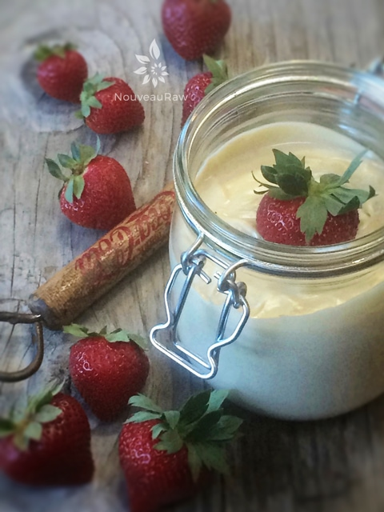
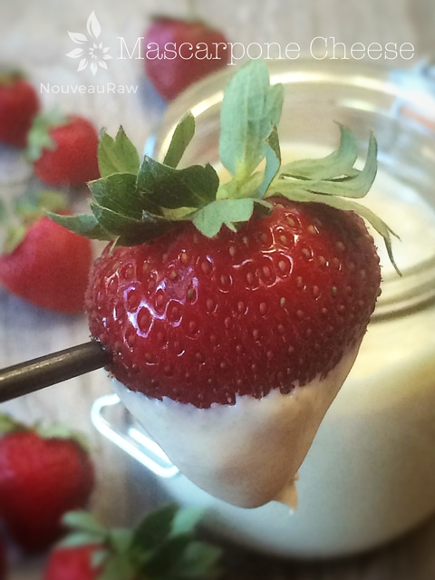
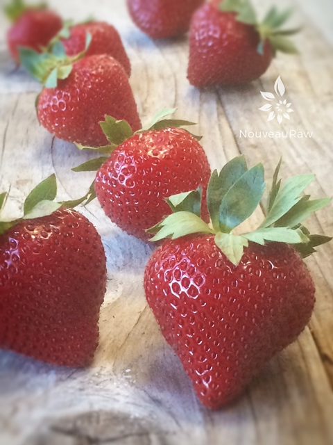

Mascarpone Cheese

~ raw, vegan, gluten-free ~
The correct pronunciation is mas-car-POH-neh. Mascarpone has a texture very similar to cream cheese. Regarding taste, mascarpone is pretty different. At its creamiest, it will taste like thick, cream-cheese-textured whipping cream and is kind of sweet and dessert like. It will be buttery, rich, but also fresh tasting.
Some fresh mascarpones can have a slight tang to them, but it’s very subtle. In making raw mascarpone cheese, the key ingredient to obtaining that “tang” is the use of probiotics. The mesquite powder adds that little extra creamy caramel flavor to the mascarpone giving it that robust flavor.
Mascarpone is a lot sourer than cream cheese, and it is often referred to as “Italian cream cheese.” It is most often associated with desserts, especially the classic tiramisu, but it can be used in savory recipes as well; it will add to the creaminess and flavor of a dish without overwhelming the taste. Recently, I use this recipe as a topping on strawberries.
You can use this cheese on crackers, pieces of bread, fruit dip, and I am sure there are many other ways that it can be enjoyed. The key is to have a high-powered blender so you can get a really smooth and creamy mouthfeel.
I hope you enjoy this simple recipe. Please be sure to comment below and have a blessed day. amie sue
yields 3 cups
- 2 cups cashews, soaked 2+ hours
- 1/2 cup water
- 1/4 cup fresh lemon juice
- 1/4 cup + 1 tsp raw light agave nectar or maple syrup
- 1 tsp nutritional yeast
- 1 tsp light chickpea miso
- ½ tsp Himalayan pink salt
- 1 tsp raw mesquite powder
- 1 tsp probiotics (7 capsules emptied)
Preparation:
- In a high-speed blender combine the cashews, water, lemon juice, agave, nutritional yeast, miso, salt, mesquite powder, and probiotics. Blend until completely smooth.
- This may take 3-5 minutes. It depends on the blender you use.
- You want to make sure that you don’t feel any grit from the cashews. We are aiming for a smooth and wonderful mouth feel!
- Pour the mixture into a glass bowl and allow it to sit with a towel covering it, in a warm place for 14 – 16 hours to culture.
- When finished culturing transfer to an airtight glass container and refrigerate for 4 hours or until set.
- This should keep for at least 5 days.
- This cheese is great on pieces of bread, crackers, as a veggie dip, as a spread on sandwiches, or it can be used as the cream base in cheesecakes and ice creams!



© AmieSue.com